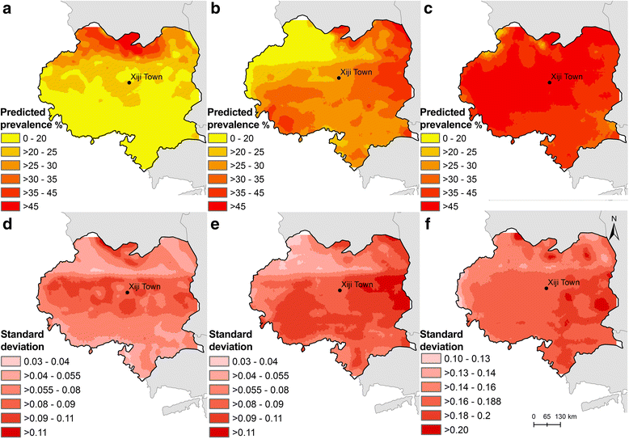
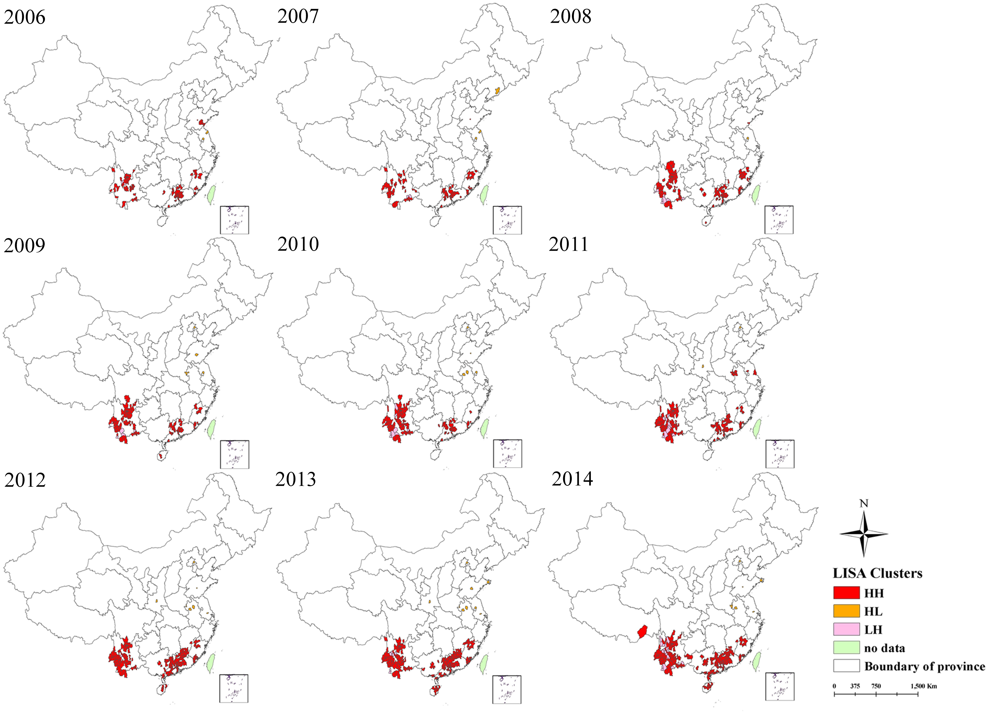

Co-variation in human and animal disease risk


Wu, Y.C., Qian, Q., Soares Magalhaes, R.J., Han, Z.H., Hu, W.B., Haque, U., Weppelmann, T.A., Wang, Y., Liu, Y.X., Li, X.L., Sun, H.L., Sun, Y.S., Clements, A.C.A., Li, S.L. & Zhang, W.Y. (2016) Spatiotemporal Dynamics of Scrub Typhus Transmission in Mainland China, 2006-2014. PLOS Neglected Tropical Diseases, 10, e0004875.
Cadavid Restrepo, A.M., Yang, Y.R., McManus, D.P., Gray, D.J., Barnes, T.S., Williams, G.M., Soares Magalhães, R.J. & Clements, A.C.A. (2018) Environmental risk factors and changing spatial patterns of human seropositivity for Echinococcus spp. in Xiji County, Ningxia Hui Autonomous Region, China. Parasites & Vectors, 11, 159.
Guo, D., Zhou, H., Zou, Y., Yin, W., Yu, H., Si, Y., Li, J., Zhou, Y., Zhou, X. & Magalhães, R.J.S. (2013) Geographical analysis of the distribution and spread of human rabies in China from 2005 to 2011. PLOS One, 8, e72352.